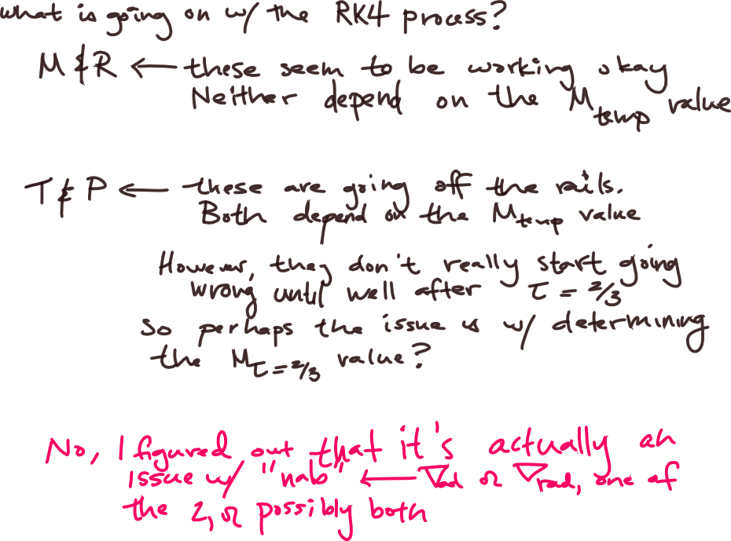
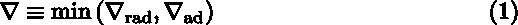

Date & Time: Nov. 8, 2012
Location: Campus
Computing context: /Desktop/Research/CppHenyeyCode, /Desktop/Research/BodenheimerCode/UnalteredCode/
Continuing from last time:
What's going ON? If I force the two codes to use exactly the same tau and dTau values, what happens again? Under those circumstances, they *should* be produce the same P/T/M/R profiles. If they don't, I suppose I could go through at each k-step and force that step (only) to use the Peter-values from that step, and see if that corrects anything. If that worked, that would mean that I have a typo or an error of some kind on one of my k-steps. If not, then I guess(?) it would mean that the error is in the look-up table/interpolation of the kappa/nab/rho/etc. secondary variables.
To Do:

Notes
1
I (eventually) figured out the stuff in "Notes 1" by comparing the dTk[1-4] values in Helena to their Peter counterparts. This by itself uncovered an important typo in my dTk4 equation (using M rather then Mtemp). That's fixed, and that certainly helps, but it's not the silver bullet for the atmos profiles problem. It did, however, clue me in to the fact that the dTk[1-4] values (all 4 of them, all the time-- not one individual one of them) hold the key to getting the right profiles out of this RK4 process.
The only quantity unique to the dTk[1-4] calculations is "nab," defined in Eqn (1) as:
